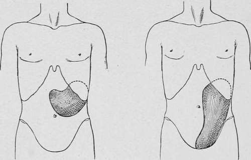

Hair-Balls
Description
This section is from the book "Cancer And Other Tumours Of The Stomach", by Samuel Fenwick. Also available from Amazon: Cancer and other tumours of the stomach.
Hair-Balls
Out of the twenty-four cases of this variety no fewer than twenty-three were females, the youngest of whom was eighteen 1 and the oldest thirty-four at the time of death. There were never any indications of mental disease, and in several instances it was expressly mentioned that the patient was neither hysterical nor particularly emotional.
The habit of hair-swallowing is usually acquired in early life, when the hair is worn loose upon the shoulders. In the majority of cases it originates in the trick frequently practised by young girls of holding a lock of hair in the mouth while reading a book, or of biting the ends of a coil when angry or excited. In other instances it seems to arise from the inclination, which is so strongly marked in certain people, to fill the mouth with any substance with which they happen to be working, such as cotton in the case of dressmakers, wool or thread among weavers, and tow, flock, or cocoanut-fibre among those engaged in the manufacture of mattresses or mats. Finally, it may be due to some acquired eccentricity, of which the patient herself is often quite unconscious. Thus, in one case the husband stated that whenever his wife was unusually interested in a subject she invariably pulled out two or three hairs from the back of her head and put them into her mouth ; while in another it was observed that the lady would frequently pluck hairs from her children's heads when she caressed them or played with them. In the instance recorded by Inman the patient was accustomed to clean her comb with her fingers, and quite unwittingly to put the little bunch of loose hair into her mouth instead of into a toilet tidy. In each of these conditions it is probable that the mouth and throat become so tolerant of the presence of the foreign substance that the hairs are constantly swallowed with the saliva without creating any unpleasant symptoms.
1 Since this chapter was written Paton has reported the successful removal of a hair-ball from the stomach of a girl eight years of age.
Until the concretion has attained a considerable size and has seriously diminished the capacity of the stomach it seldom produces any special symptoms, and even when the organ is completely filled with hair the patient may be quite free from pain and vomiting (Russell, Thornton). As a rule, however, after a prolonged period of more or less pronounced dyspepsia the patient begins to experience severe pain after meals with flatulence, distension, and nausea. Gradually the pain becomes localised to the epigastrium or left hypochondrium, and is increased by exercise or pressure upon the part. Vomiting is seldom absent, and sometimes occurs after every meal. The ejecta are small in quantity, acid in reaction, and often contain altered bile if the concretion involves the duodenum. Occasionally the vomit is stained with blood ; but hair has never been observed in it. Anaesmia is always a noticeable feature of the case, and may be accompanied by palpitation, dyspnoea, and oedema of the feet. The appetite is variable, but sometimes continues good ; the tongue is foul, the breath offensive, and attacks of diarrhoea are apt to alternate with periods of troublesome constipation. Progressive loss of flesh is seldom observed except when vomiting is excessive.
Physical Signs
In every case there is a well-marked abdominal tumour, which is of ten large enough to be visible through the parietes. When the concretion is comparatively small the tumour is globular in form and occupies the epigastrium, but in advanced cases it approximates closely to the shape of the stomach, and was variously described in the recorded cases as 'kidney-shaped,' ' crescentic,' or ' like a spleen.' As a rule it is situated in the epigastrium and left hypochondrium, but it may involve the umbilical and the left lumbar region. In Russell's case the stomach was so displaced that the pylorus lay in the pelvis and the tumour occupied the whole of the left side of the abdomen.
On palpation it feels hard, smooth, and superficial, and has a well-defined lower border. It is dull on percussion and seldom tender, except after prolonged manipulation and in those cases where the stomach is ulcerated. One of the principal features of the tumour is its extreme mobility, which permits it to be displaced downwards and to the left, or to be pushed upwards beneath the costal margin in the direction of the spleen. At a late stage of the complaint, however, adhesions may form, which fix the organ to the pancreas or abdominal wall (May). Peristaltic movements of the stomach are rarely visible, but flatus may sometimes be seen or felt in the tumour (Best). Sometimes other hard, globular, and movable masses may be detected to the right of the navel or in the iliac fossa from the presence of hair-balls in the duodenum or ileum. In every case the tumour enlarges very slowly, and, except perhaps for a sensation of weight or dragging, it does not give rise to any special inconvenience.
Duration And Complications
The duration of the disease is difficult to determine, but it probably averages about fifteen years. In May's case the patient was known to have practised hair-swallowing for twenty-two years, and in that recorded by Russell the tumour had been detected at the age of fourteen. From its slow growth during adult life it is probable that the greater part of the concretion is formed during childhood. With the exception of two instances in which laparotomy was performed, all the cases ended fatally. In about one half death was due to ulceration and perforation of the stomach; fatal haematemesis occurred in one instance, while in two others intestinal obstruction was responsible for the lethal event. In all the rest death ensued from exhaustion entailed by vomiting and diarrhoea.
Fig. 65.-Tumour formed by a hair- Fig. 66.-Tumour formed by a large ball in the stomach. hair-ball which had produced dislocation of the stomach.
Continue to:
- prev: Chapter V. Concretions In The Stomach [Hair-Balls-Bezoars-Gastroliths]
- Table of Contents
- next: Case XXIX